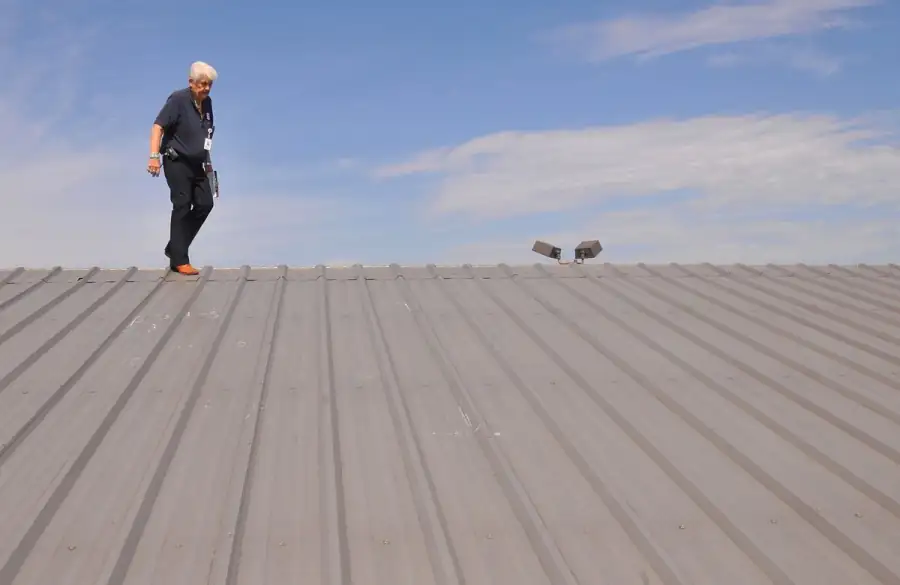

What happens during a free roof inspection?
A no-pressure check of your roof, explained in plain English.
- Surface, flashings, ridge capping, gutters and valleys checked
- Findings photographed where it’s safe to do so
- Clear next steps: no action, maintenance or further support
Read the full guide
A CRG roof inspection gives you a clear picture of your roof’s current condition, without pressure or obligation.
We visually assess the roof surface, flashings, penetrations, ridge capping, gutters, valleys and any signs of weather-related wear. Where safe, we photograph findings so you can see what we see.
Afterwards we explain the roof’s condition and the next steps. That may be no action at all, a minor maintenance fix, or damage that needs further documentation and support.